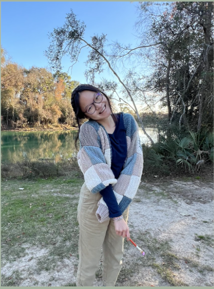
Meibeth (she/her) is a fourth-year Government, Humanities, and Asian American Studies major with a passion for human rights and social justice. Inspired by community renewal, personal freedom, and a hope for a more mindful world, she aims to foster greater respect around mental health care. As a Chinese American and a mental health advocate, she seeks to dive into the intersectionality of the two to develop a greater understanding of her own heritage and to encourage vulnerability among the (un)Jaded community, especially concerning underrepresented struggles within mental health.
Areas of interest: exploring nature, music, cloud watching, crocheting
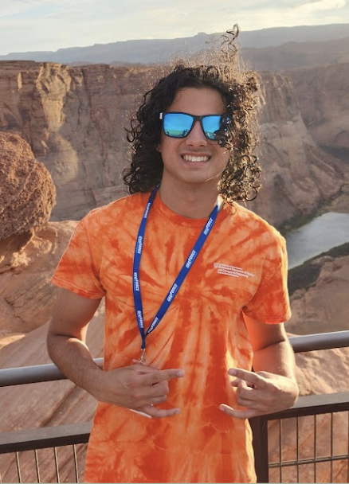
Rayan (he/him) is a second-year Geosystems Engineering and Hydrogeology major, and he has a passion for learning about other perspectives in life. He joined (un)Jaded because he wanted to find a community of students his age that he could openly talk to about mental health topics. He also struggles with feeling very detached from his Asian culture, and wanted to try to understand more. As a director, he wants to make this organization a place where all people can feel welcomed with open arms and have a place to destress after long college days.
Areas of interest: being outdoors, criminal psychology videos, cooking, listening to music
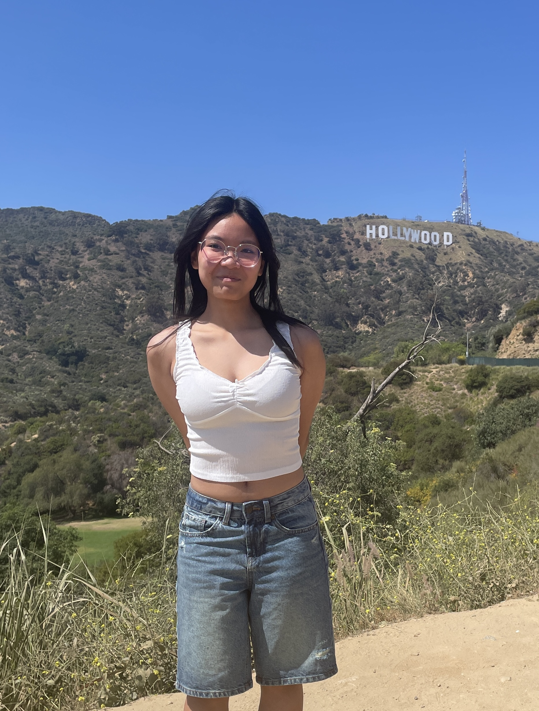
Kathy (she/her) is a fourth-year Computational Biology major passionate about social advocacy and destigmatizing mental health in Asian communities. Inspired by the power of vulnerability and collective healing, she hopes to spark conversations that normalize mental health struggles and uplift underrepresented voices. She seeks to foster inclusive spaces within (un)Jaded that encourage open conversation, compassion, and support, while building stronger connections across communities.
Areas of interest: being outdoors, criminal psychology videos, cooking, listening to music
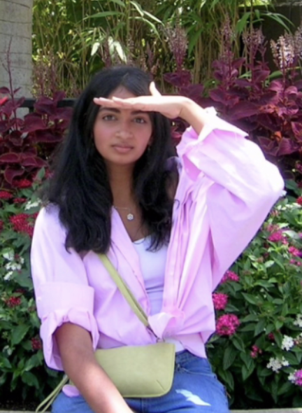
Saanvi (she/her) is a second-year studying Biology and Urban Studies, passionate about community building and social engagement. Initially, she joined (un)Jaded to find a space for open discussion about vulnerabilities within the Asian American community, and as a director, she would like to continue having these difficult conversations. Through fundraising for (un)Jaded, she hopes to not only keep this org alive but also to create meaningful connections within its membership and with AAPI community leaders around Austin.
Areas of interest: rnb music, fashion, language, board games, flowers
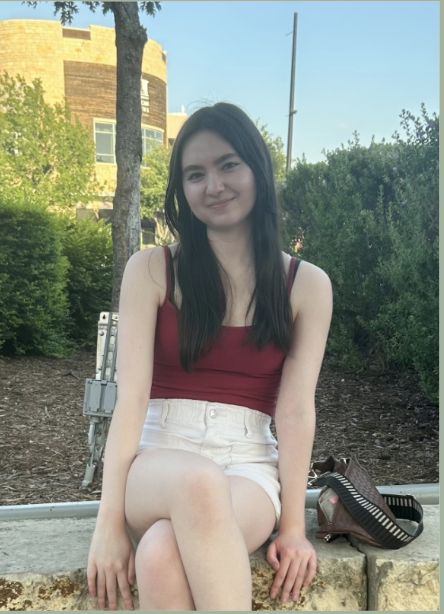
Alana (she/her) is a second-year Psychology and Human Development & Family Sciences major. She joined (un)Jaded because she wanted to learn more about different cultures and be a part of a space that encourages vulnerability and authenticity. As a director, she wants to foster discussions about mental health and AAPI issues and is looking forward to meeting everyone!
Areas of interest: crocheting, kpop, listening to music, watching youtube
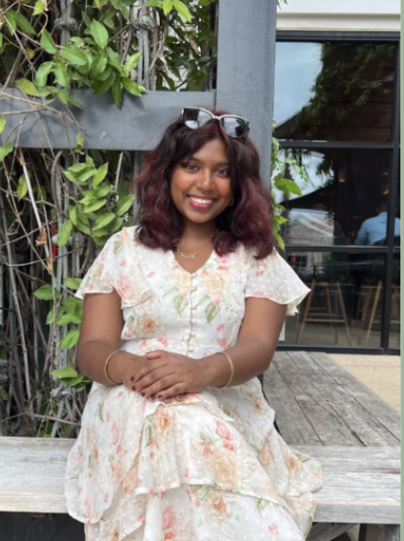
Joanne (she/her) is a second-year Mathematics and Statistics and Data Science student. She joined (un)Jaded because she loves learning about different cultures and how they intersect with societal issues, and she wanted the opportunity to have open discussions with other like-minded people. As a director, she hopes to organize meaningful events that engage people and keep our wonderful org running smoothly.
Areas of interest: anything artsy, reading/writing, baking/cooking, playing music
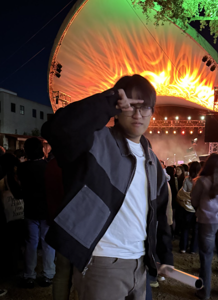
Joey (he/him) is a fourth year Chemistry major with an interest in trying to destigmatize and open the conversation on mental health, especially in the Asian American community. He joined (un)jaded because he felt that he could have conversations about mental health without any judgement, and he found a beautiful community with so many great people. As a director, he's hoping to provide more opportunities to contribute back to the city of Austin for everyone!
Areas of interest: sports, cooking, video games, going outdoors, crosswords, trivia, cars
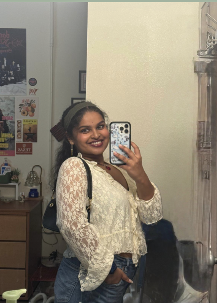
Devika (she/her) is a third year Public Health major....
Areas of interest: ....
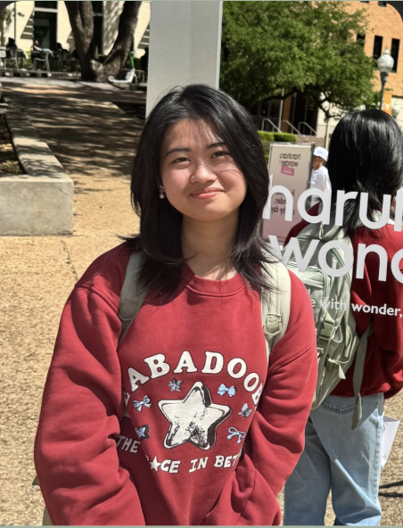
Mim (any pronouns) is a second year psychology major on the pre-med track with a passion for mental health and social advocacy. They joined (un)Jaded because of the safe space it provided for people to be vulnerable, and it helped them find close friendships they wouldn’t find anywhere else. As a director, they hope to build upon this foundation to help other people connect to their culture, start conversations about the issues that are deeply engrained in our society that impact us everyday, and have a place where they can create positive connections and bonds.
Areas of interest: art (or anything creative really), music, nature, games, and trying new foods
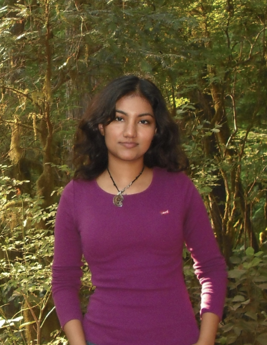
Jenya (she/her) is a second year psychology major with an interest in mental health and social advocacy. She is proud to be part of the (un)Jaded community, and through her role as a director this year, she hopes to cultivate a safe space for herself and others to connect to their roots while deconstructing the issues they face within our communities. She believes that there is great power in open conversation and connection, and through doing so we can develop lifelong skills and strategies, forging a better path for ourselves and others.
Areas of interest: anything creative, reading, and nature
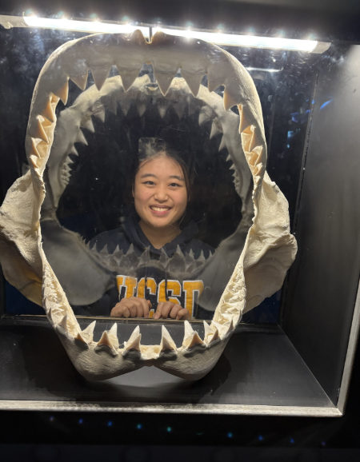
Kit (they/them) is a a senior Psychology BS; they hope to create community, destigmatize mental health, and facilitate a space where people can openly share ideas. They love that (un)Jaded is a place with so many different perspectives and wonderful people, and they really love this community.
Areas of interest: art, music, dance, watching youtube, and anime
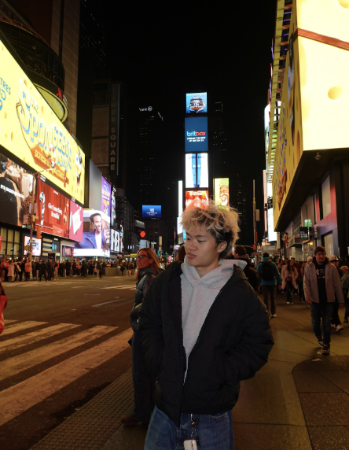
Lucas (he/him) is a second year Informatics major interested in design, mental health, and AAPI culture. He first joined (un)Jaded looking to find likeminded people who shared similar interests and experiences as himself, and he is glad to have found them here. Now as a director, he is excited to welcome anyone who is looking for a space that values community, inclusivity, and mental health advocacy.
Areas of interest: art, design, music + concerts, dc, fashion, photography, video games, thrifting, vinyl collecting
Meibeth (she/her) is a fourth-year Government, Humanities, and Asian American Studies student with a passion for human rights and social justice. Inspired by community renewal, personal freedom, and a hope for a more mindful world, she aims to foster greater respect around mental health care. As a Chinese American and a mental health advocate, she seeks to dive into the intersectionality of the two to develop a greater understanding of her own heritage and to encourage vulnerability among the (un)Jaded community, especially concerning underrepresented struggles within mental health.
Areas of interest: exploring nature, music, cloud watching, crocheting
Rayan (he/him) is a second-year Geosystems Engineering and Hydrogeology major, and he has a passion for learning about other perspectives in life. He joined (un)Jaded because he wanted to find a community of students his age that he could openly talk to about mental health topics. He also struggles with feeling very detached from his Asian culture, and wanted to try to understand more. As a director, he wants to make this organization a place where all people can feel welcomed with open arms and have a place to destress after long college days.
Areas of interest: being outdoors, criminal psychology videos, cooking, listening to music
Kathy (she/her) is a third-year Computational Biology major passionate about social advocacy and destigmatizing mental health in Asian communities. Inspired by the power of vulnerability and collective healing, she hopes to spark conversations that normalize mental health struggles and uplift underrepresented voices. She seeks to foster inclusive spaces within (un)Jaded that encourage open conversation, compassion, and support, while building stronger connections across communities.
Areas of interest: being outdoors, criminal psychology videos, cooking, listening to music
Saanvi (she/her) is a second-year studying Biology and Urban Studies, passionate about community building and social engagement. Initially, she joined (un)Jaded to find a space for open discussion about vulnerabilities within the Asian American community, and as a director, she would like to continue having these difficult conversations. Through fundraising for (un)Jaded, she hopes to not only keep this org alive but also to create meaningful connections within its membership and with AAPI community leaders around Austin.
Areas of interest: rnb music, fashion, language, board games, flowers
Alana (she/her) is a second-year Psychology and Human Development & Family Sciences major. She joined (un)Jaded because she wanted to learn more about different cultures and be a part of a space that encourages vulnerability and authenticity. As a director, she wants to foster discussions about mental health and AAPI issues and is looking forward to meeting everyone!
Areas of interest: crocheting, kpop, listening to music, watching youtube
Joanne (she/her) is a second-year Mathematics and Statistics and Data Science student. She joined (un)Jaded because she loves learning about different cultures and how they intersect with societal issues, and she wanted the opportunity to have open discussions with other like-minded people. As a director, she hopes to organize meaningful events that engage people and keep our wonderful org running smoothly.
Areas of interest: anything artsy, reading/writing, baking/cooking, playing music
Joey (he/him) is a fourth year Chemistry major with an interest in trying to destigmatize and open the conversation on mental health, especially in the Asian American community. He joined (un)jaded because he felt that he could have conversations about mental health without any judgement, and he found a beautiful community with so many great people. As a director, he's hoping to provide more opportunities to contribute back to the city of Austin for everyone!
Areas of interest: sports, cooking, video games, going outdoors, crosswords, trivia, cars
Devika (she/her) is a third year Public Health major....
Areas of interest: ....
Mim (any pronouns) is a second year psychology major on the pre-med track with a passion for mental health and social advocacy. She joined (un)Jaded because of the safe space it provided for people to be vulnerable, and it helped her find close friendships she wouldn’t find anywhere else. As a director, she hopes to build upon this foundation to help other people connect to their culture, start conversations about the issues that are deeply engrained in our society that impact us everyday, and have a place where they can create positive connections and bonds.
Areas of interest: art (or anything creative really), music, nature, games, and trying new foods
Jenya (she/her) is a second year psychology major with an interest in mental health and social advocacy. She is proud to be part of the (un)Jaded community, and through her role as a director this year, she hopes to cultivate a safe space for herself and others to connect to their roots while deconstructing the issues they face within our communities. She believes that there is great power in open conversation and connection, and through doing so we can develop lifelong skills and strategies, forging a better path for ourselves and others.
Areas of interest: anything creative, reading, and nature
Kit (they/them) is a a senior Psychology BS; they hope to create community, destigmatize mental health, and facilitate a space where people can openly share ideas. They love that unjaded is a place with so many different perspectives and wonderful people, and they really love this community.
Areas of interest: art, music, dance, watching youtube, and anime
Lucas (he/him) is a second year Informatics major interested in design, mental health, and AAPI culture. He first joined (un)Jaded looking to find likeminded people who shared similar interests and experiences as himself, and he is glad to have found them here. Now as a director, he is excited to welcome anyone who is looking for a space that values community, inclusivity, and mental health advocacy.
Areas of interest: art, design, music + concerts, dc, fashion, photography, video games, thrifting, vinyl collecting